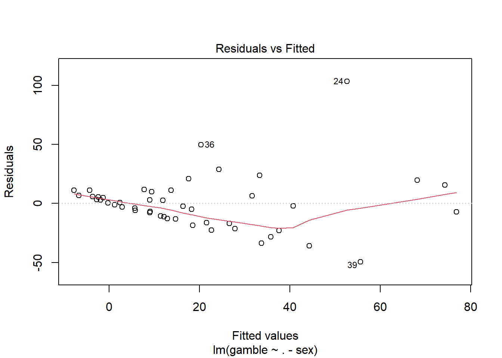
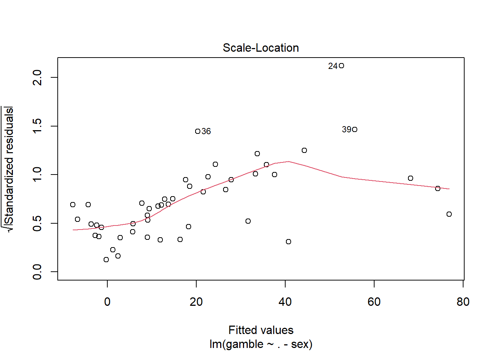
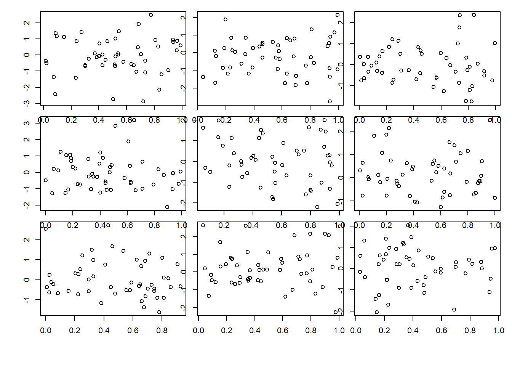
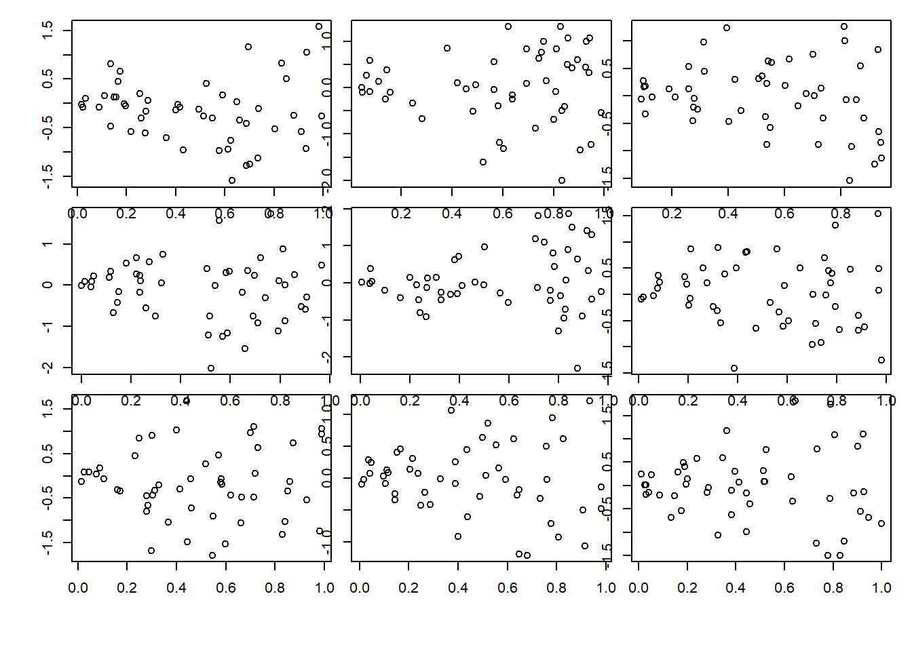
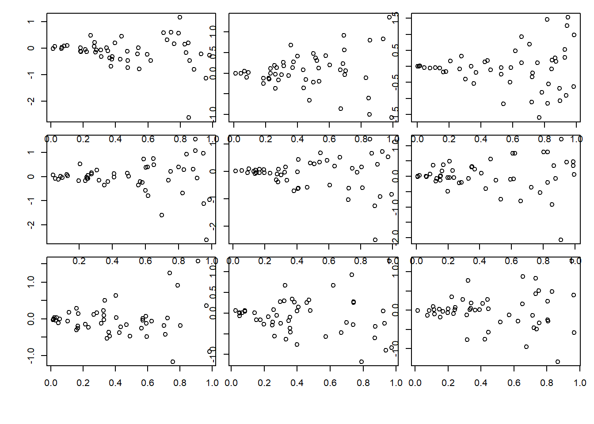
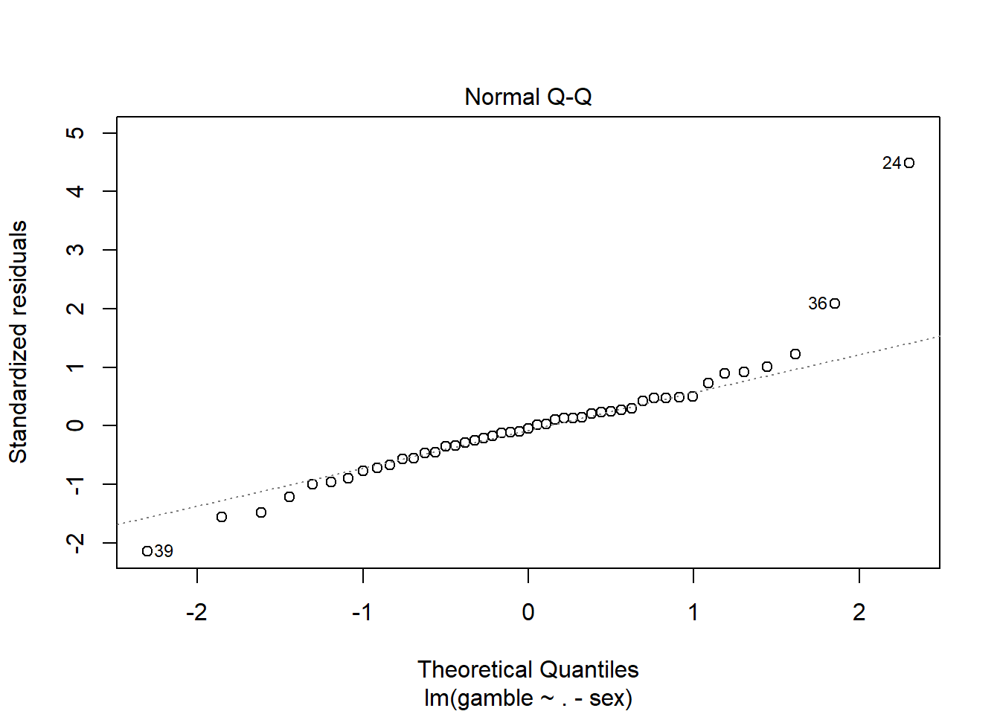
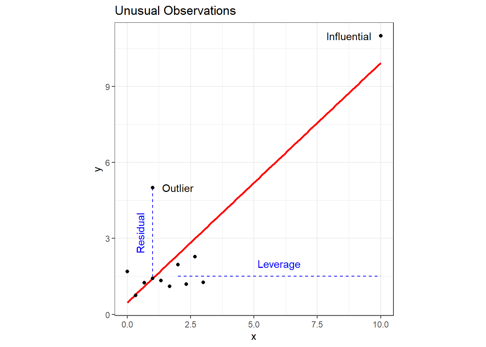

There are four assumptions fundamental to linear regression:
Linearity: The relationship between x and the mean of y is linear.
Homoscedasticity: The variance of residual is the same for any value of x (i.e, constant variance).
Independence: Independence of the prediction error from every one of the predictor variables.
Normality: The prediction error is normally distributed.
When conducting linear regression, we need to always perform diagnostic check to ensure we are not violating any of the inherent assumptions.
Linearity
The assumption is that the relationship between x and the mean of y is linear, but what does that mean exactly? A regression model is linear if \(E[Y|X =x]\) is a linear function of the\(\beta\) parameters, not of \(x\). That means each of the following is a linear model:
As with ANOVA, R produces diagnostic plots for objects created by the lm() function. The first plot may be used to evaluate both linearity and homoscedasticity. A linear relationship will be indicated by a (relatively) horizontal red line on the plot. Since our height-weight data is so simple, we’ll switch to the teengamb dataset from the faraway package. This dataset consists of four predictor variables and one response (gamble). Read the help for teengamb to familiarize yourself with the data. Since one of the predictors is binary (sex), we’ll exclude it for this example. 3 A summary of the resulting linear model is as follows.
Call:
lm(formula = gamble ~ . - sex, data = teengamb)
Residuals:
Min 1Q Median 3Q Max
-49.649 -12.008 -1.242 8.239 103.390
Coefficients:
Estimate Std. Error t value Pr(>|t|)
(Intercept) -1.3044 15.7760 -0.083 0.9345
status 0.4701 0.2509 1.873 0.0678 .
income 5.7707 1.0494 5.499 1.95e-06 ***
verbal -4.1211 2.2785 -1.809 0.0775 .
---
Signif. codes: 0 '***' 0.001 '**' 0.01 '*' 0.05 '.' 0.1 ' ' 1
Residual standard error: 24.28 on 43 degrees of freedom
Multiple R-squared: 0.445, Adjusted R-squared: 0.4062
F-statistic: 11.49 on 3 and 43 DF, p-value: 1.161e-05
The diagnostic plot to check the linearity assumption is the first plot returned, and we see a slight “U” shape to the red line. Notice that there are only three observations on the far right which appear to be heavily influencing the results. The conical spread of the data also strongly suggests heteroscedasticity might be an issue.
plot(tg.lm, which =1)

Another screening method is with a pairs plot, which we can quickly produce in base R with pairs(). This is a great way to do a quick check potential nonlinear relationships between pairs of variables. This is a screening method only, however, because we’re projecting onto two dimensions, so we may be missing things lurking in higher dimensions.
If evidence of a nonlinear relationship exists, a linear model can still be used; however, either the response variable or one or more of the predictors must be transformed. This topic is covered in detail in the Advanced Designs chapter.
Homoscedasticity
The procedure for testing constant variance in residuals in a linear model is similar to ANOVA. A plot of residuals versus fitted values is shown two plots ago, and we can look at the square root of standardized residuals versus fitted values. Both plots show strong evidence of heteroscedasticity.
plot(tg.lm, which =3)

There is no doubt some subjectivity to visual inspections. As a guide, consider the next three sets of plots that show constant variance, mild heteroscedasticity, and strong heteroscedasticity.
Constant variance:
par(mfrow =c(3,3), oma =c(5,4,0,0) +0.1, mar =c(0,0,1,1) +0.1)n <-50for(i in1:9) {x <-runif(n); plot(x,rnorm(n))}

Mild heteroscedasticity:
par(mfrow =c(3,3), oma =c(5,4,0,0) +0.1, mar =c(0,0,1,1) +0.1)for(i in1:9) {x <-runif(n); plot(x,sqrt((x))*rnorm(n))}

Strong heteroscedasticity:
par(mfrow =c(3,3), oma =c(5,4,0,0) +0.1, mar =c(0,0,1,1) +0.1)for(i in1:9) {x <-runif(n); plot(x,x*rnorm(n))}

The linear model analog to the Levene test is the Breusch-Pagan test. The null hypothesis is that the residuals have constant variance, and the alternative is that the error variance changes with the level of the response or with a linear combination of predictors. The ncvTest() from the car (companion to applied regression) package performs the test, and when applied to the tg.lm object confirms our suspicion of non-constant variance based on our visual inspection.
car::ncvTest(tg.lm)
Non-constant Variance Score Test
Variance formula: ~ fitted.values
Chisquare = 26.18623, Df = 1, p = 3.1003e-07
Independence
The concept of independent (and identically distributed) data was covered in the statistics review and ANOVA chapters. It is no different when conducting linear regression and so will not be repeated here.
Normality
Again, checking whether the residuals are normally distributed is the same for linear regression as for ANOVA. Create a Q-Q plot and apply the Shapiro-Wilk test as shown below.
plot(tg.lm, which=2)

shapiro.test(residuals(tg.lm))
Shapiro-Wilk normality test
data: residuals(tg.lm)
W = 0.8651, p-value = 6.604e-05
Unusual Observations
Although not an assumption inherent to a linear model, it’s good practice to also check for unusual observations when performing diagnostic checks. There are two types of unusual observations: outliers and influential. An outlier is an observation with a large residual - it plots substantially above or below the regression line. An influential observation is one that substantially changes the model fit. Keep in mind that it is possible for an observation to have both characteristics. Examples of both types of observations are shown on the following plot (note that I rigged observations 11 and 12 to be unusual observations).

It’s not necessarily bad to have unusual observations, but it’s good practice to check for them, and, if found, decide what to do about them. A point with high leverage falls within the predictor space but is significantly separated from the other points. It has the potential to influence the fit but may not actually do so.
Leverage Points
The amount of leverage associated with each observation is called the hat value and are the diagonal elements of the hat matrix, which you can read more about here, if you’re interested (or just really like linear algebra). The gist of it is that the sum of the hat values equals the number of observations. If every observation has exactly the same leverage, then the hat values will all equal \(p/n\), where p is the number of parameters and n is the number of observations (in our example we just have two parameters, so it’s \(2/n\)). Increasing the hat value of one observation necessitates decreasing the hat values of the others, so we’re essentially looking for hat values significantly greater than this theoretical average. The generally accepted rule of thumb is that hat values greater than ~ \(2p/n\) times the averages should be looked at more carefully. Extracting hat values from a linear model in R is done using the hatvalues() or influence() functions.
A graphical way of looking at leverage is with the halfnorm() function in the faraway package, which plots leverage against the positive normal quantiles. I added a red line to indicate the rule of thumb threshold.
where \(\hat{\varepsilon}\) are the residuals, \(\hat{\sigma}\) is the estimated residual standard error, and \(h\) is the leverage. The rule of thumb for identifying unusually large standardized residuals is if \(|r_{i}| > 2\). We can get standardized residuals in R with rstandard().
In the book, Linear Models With R (Faraway 2014), Faraway gives advice on this topic that I’ll paraphrase:
Check for data entry errors and correct any that are found.
Consider the context. An unusual observation may be the single most important observation in the study.
Exclude the observation from the dataset and refit a model. If it makes little to no difference in your analysis, then it’s usually best to leave it in.
Do not automate the process of excluding outliers (see #2 above).
If you exclude an observation, document it in your report and explain your rationale so that your analytic integrity is not questioned.
References
Faraway, Julian. 2014. Linear Models with r. Chapman & Hall.